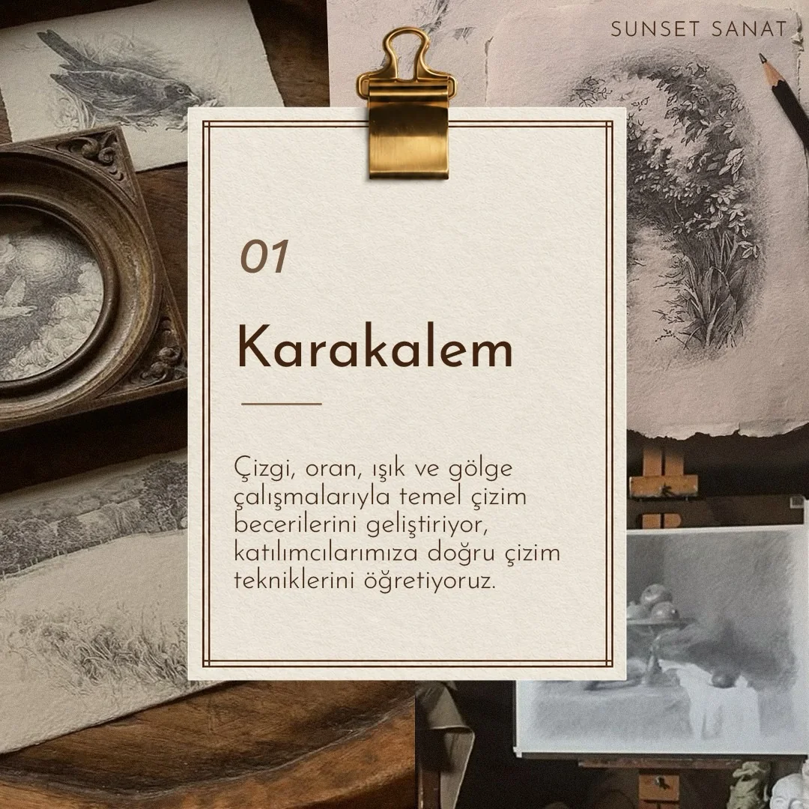
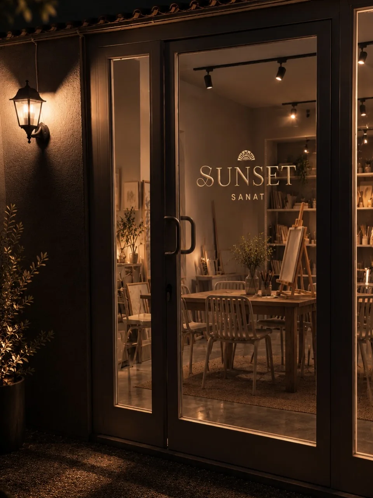
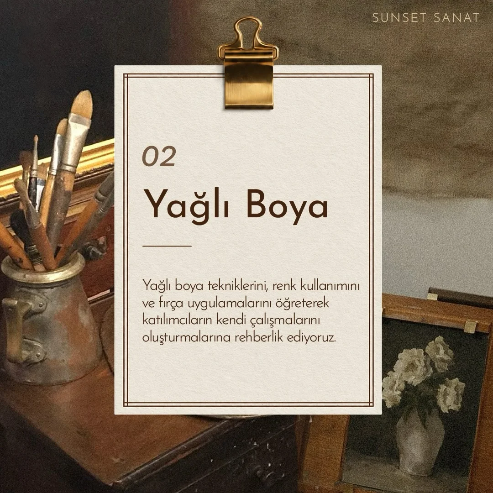
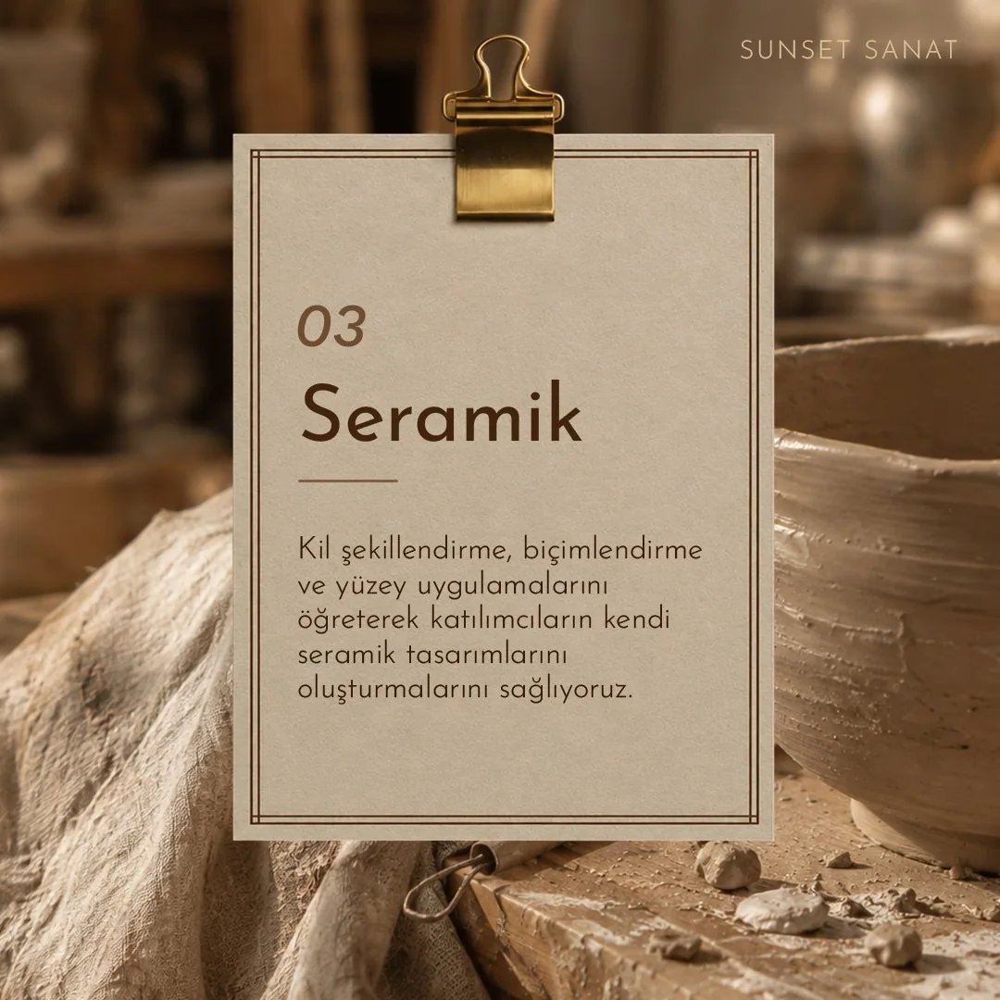
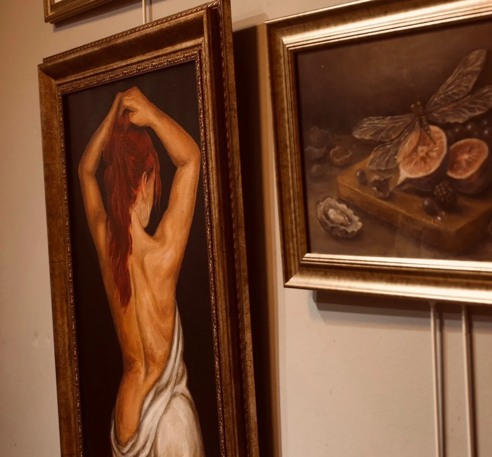
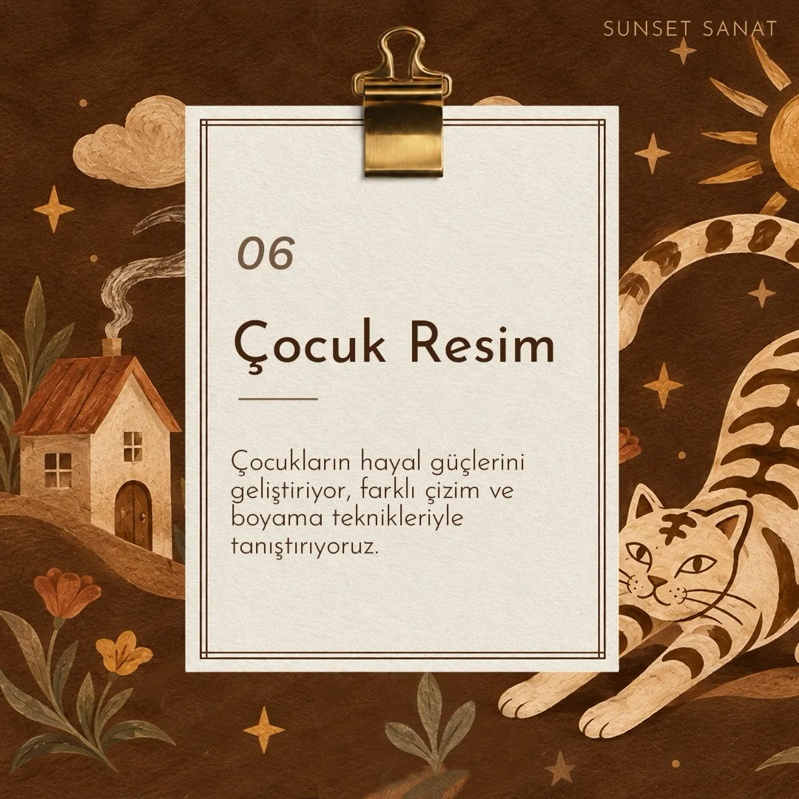
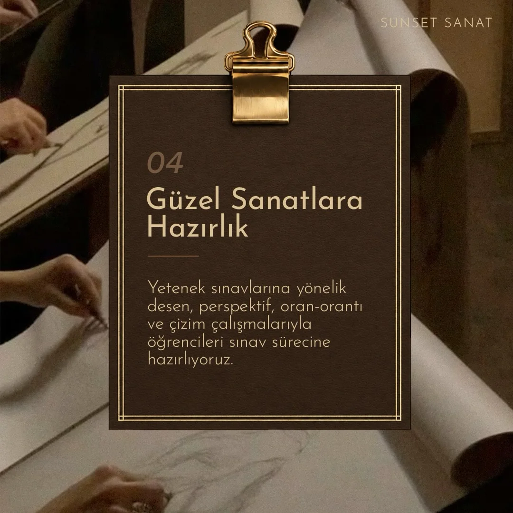
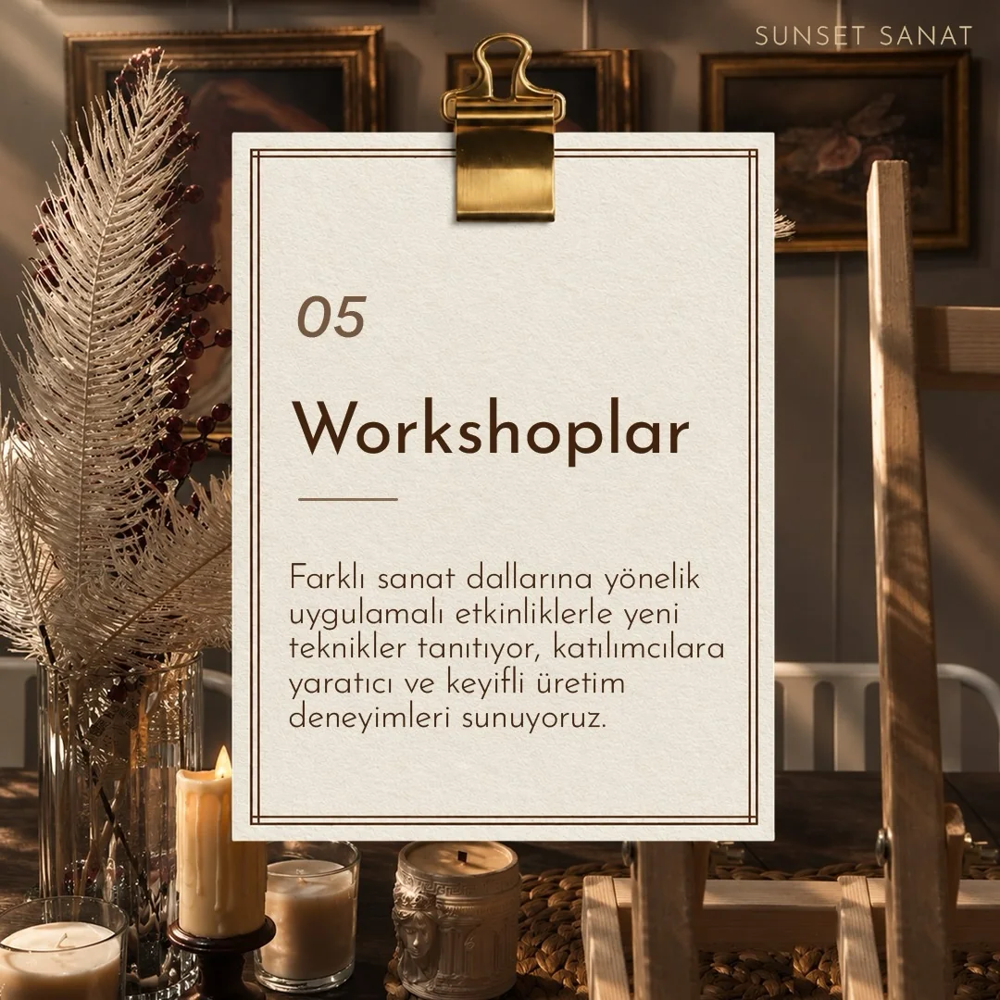
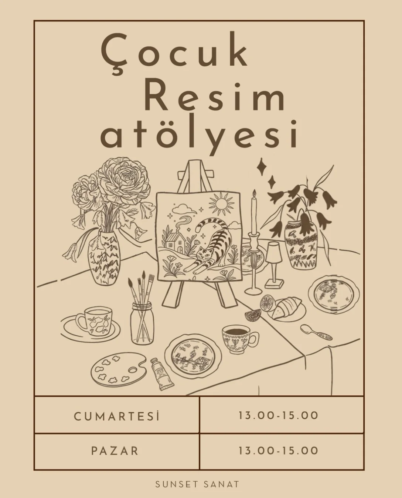

01 İSTANBUL · ÜMRANİYE SANAT ATÖLYESİ
Hayal et.
Üret.
İz bırak.
Her şey bir çizgiyle başlar. Kendi renklerinizi keşfetmek, yeni teknikler öğrenmek ve sanatla buluşmak için Sunset Sanat’a davetlisiniz.
Çocuklardan yetişkinlere,
her seviyede sanat yolculuğu.
her seviyede sanat yolculuğu.

EST.ART
IS FOR
EVERYONE
IS FOR
EVERYONE
SUNSET SANAT — ÇAMLIK / ÜMRANİYE
YARATICILIĞA YER AÇINAŞAĞI KAYDIR
01 / BİZ KİMİZ?
HOŞ GELDİNİZ, BİZ SUNSET SANAT
Sanat, her insanın
içinde bir yerde.
Sunset Sanat Atölyesi, İstanbul Ümraniye’de sanatın iyileştirici ve birleştirici gücünü herkesle buluşturan yaratıcı bir yaşam alanı.
Karakalemden yağlı boyaya, akrilik resimden seramiğe; çocuklara, yeni başlayanlara ve kendini geliştirmek isteyen herkese ilham veren bir öğrenme ortamı sunuyoruz.
✳ Her seviyeye açık✳ Yaratıcı öğrenme✳ Samimi atölye ortamı
02 / YOLCULUĞUNU SEÇ
Senin sanatın, senin yolun.
İster ilk fırça darbenizi atın, ister yeteneğinizi ileri taşıyın. Size uygun bir program mutlaka var.

02RESİM & RENK
Yağlı Boya
Renk, kompozisyon ve fırça kullanımıyla kendi resimlerinizi oluşturun.
Bilgi Al
03EL SANATLARI
Seramik
Kile hayat verin; biçimlendirme ve yüzey çalışmalarıyla özgün eserler üretin.
Bilgi Al
04RESİM & RENK
Akrilik Resim
Akrilik boyayla renk karışımlarını, katmanları ve farklı resim tekniklerini keşfedin.
Bilgi Al
05ÇOCUKLAR · 6 YAŞ VE ÜZERİ
Çocuk Resim
Minik sanatçıların hayal gücünü, farklı çizim ve boyama teknikleriyle büyütün.
Programı Gör
06SINAVA HAZIRLIK
Güzel Sanatlara Hazırlık
Desen, perspektif, oran-orantı ve gözlem çizimiyle yetenek sınavlarına hazırlanın.
Bilgi Al
07YARATICI ETKİNLİKLER
Workshoplar
Farklı sanat dallarını deneyimleyin; ilham verici ve keyifli üretim buluşmalarına katılın.
Bilgi AlHangi programın size uygun olduğundan emin değil misiniz?Birlikte karar verelim

ÇOCUKLAR İÇİN SANAT
Küçük eller,
büyük hayaller.
Çocuklar kendi hayal dünyalarını renklendirirken eğleniyor, deniyor, keşfediyor. Çizgi ve boyayla yaratıcılıklarını birlikte büyütüyoruz.
GÜNLERCumartesi & Pazar
SAATLER13.00 – 15.00
YAŞ GRUBU6 yaş ve üzeri
03 / MEKÂNIMIZ
İlhamın bir adresi var.
Bir köşede fırçalar, diğerinde hikâye anlatan tablolar. Gelin, sanatın yaşadığı bu sıcak mekânı keşfedin.
ATÖLYEDEN KARELER SANATLA DOLU ANLARDaha fazlası Instagram'da
“Sanat, güzel bir şeyi görmek değil; gördüğünü hissettirebilmektir.”
04 / MERAK ETTİKLERİNİZ
Aklınıza
takılanlar.
Sanata başlamadan önce merak ettiğiniz birkaç konuyu sizin için derledik.
Başka bir sorunuz mu var?Katılmak için deneyim gerekiyor mu?
Hayır. Her seviyeden katılımcıya açığız. Sanata ilgi duyan ve kendini geliştirmek isteyen herkesi bekliyoruz.
Hangi yaş gruplarına eğitim veriliyor?
6 yaş ve üzeri çocuklar için resim atölyemiz, yetişkinler için de farklı sanat programlarımız bulunuyor.
Malzemeleri yanımızda getirmeli miyiz?
Gerekli atölye malzemeleri atölyemizde bulunuyor. Programa özel ayrıntıları kayıt öncesinde bizimle görüşebilirsiniz.
Hangi eğitimler var?
Karakalem, yağlı boya, akrilik resim, seramik, çocuk resim, güzel sanatlara hazırlık ve farklı konularda workshop çalışmaları düzenliyoruz.
Kayıt ve bilgi için nasıl ulaşabilirim?
@sunsetsanatatolyesi Instagram hesabımızdan mesaj göndererek güncel program ve katılım bilgilerini öğrenebilirsiniz.
05 / BİR KAHVE, BİRAZ SANAT
Kapımız her zaman
sanata açık.
Bizi ziyaret edin, atölyemizi keşfedin veya katılmak istediğiniz program hakkında mesaj gönderin.
✳ SUNSET SANATÇamlık · Ümraniye